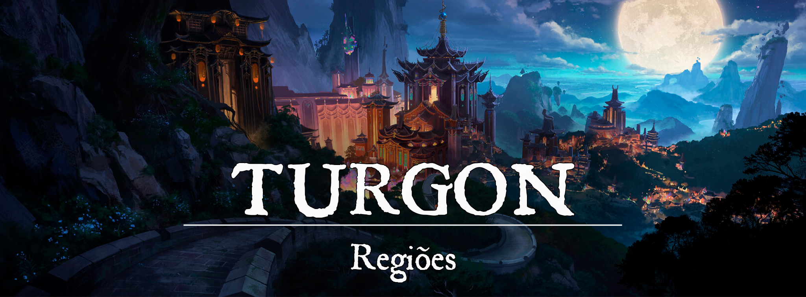

Turgon, o Império das Nuvens
Descrição Geral
Cercado por uma gigantesca cordilheira de montanhas, o império de Turgon é repleto de mistérios e tradições. A cultura Turgonita vem sendo moldada há muito tempo com base nos costumes de um povo nômade que viajava por entre os relevos da região durante a era das trevas. Acreditava-se que peregrinar por caminhos tortuosos era uma forma de fortalecer a mente e o espírito e ensinamentos como esse que moldaram a base do que hoje é o Império das Nuvens.
Mesmo com a abundante magia presente nas florestas e nas criaturas que viviam por lá, a maioria dos habitantes de Turgon conseguiu levar uma vida próspera durante as eras. Os monastérios repletos de seus guerreiros, os samurais com suas lâminas mortais e até o próprio formato da geografia foram o suficiente para mantê-los protegidos.
Mas nem tudo é sempre calmo na região da cordilheira, Turgon é a região de Éryon onde existe a maior concentração dos Espíritos da Natureza, ou Youkais. Estes seres espirituais são a manifestação material da alma da própria natureza que cerca a região e nem todos os youkais são pacíficos. Durante as eras, a relação entre homens e Youkais sempre foi instável, enquanto alguns Youkais poderosos e bondosos são adorados pelos homens como os Kamis de Inari, outros atacam e devoram as vilas deixando caos e destruição por onde passam, sendo muitas vezes comparados até mesmo com demônios.
Na atualidade, o império de Turgon se mantém como uma potência por conta de sua abundância de materiais naturais, sejam eles de qualquer tipo, as montanhas do Império das Nuvens são repletas de ouro e outros materiais preciosos, as florestas são repletas de boas árvores e de ervas mágicas que só se encontram pela região, além do controverso comercio de materiais mágicos que podem ser extraídos de certos youkais, prática essa que é proíbida pela lei do império, mas por debaixo dos panos, continua sendo exercida com contrabandos nos mercados negros.
O povo de Turgon, ao contrário do que se espera devido a sua geografia peculiar, é bem receptivo a viajantes e turistas, desde que estes não atrapalhem suas cerimônias nem firam seus costumes. Mas para aquele que quer aproveitar de uma jornada espiritual de evolução própria e de uma cultura repleta de segredos e de ensinamentos de paz, o Império das Nuvens é o lugar certo para se visitar.
Descrição Visual:
Cordilheira das Nuvens att |Cordilheira das Nuvens
{kind=link}
A região de Turgon é cercada pela Cordilheira das Nuvens, uma cadeia de montanhas que corta todo o continente de leste a oeste, quase que impossibilitando a viagem por terra. O império conta com um relevo bem acentuado por toda sua extensão, e nos lugares onde não há montanhas, existem florestas fechadas e mágicas que qualquer inexperiente poderia se perder e não se encontrar jamais. Além disso, a região da cordilheira é abundante em lençóis freáticos, rios, lagos e lagoas, tendo um ecossistema aquático bem desenvolvido.
População:
O povo da cordilheira é composto em sua maioria por Humanos, Elfos, Meio-elfos, Shifters, Tortles e Youkais
Cultura:
Desde os primórdios, a cultura do aperfeiçoamento próprio foi muito presente na Cordilheira das Nuvens, mesmo antes dos Quatro Lordes chegarem. A disciplina foi enraizada no povo Turgonita, o que acabou afetando muitos aspectos do dia a dia, tornando o povo único à sua maneira. Seus conceitos culminaram na criação do “Caminho do Guerreiro”, adotado principalmente por samurais. Um código de honra que ditava a moralidade na vida desses guerreiros. O código girava em torno da justiça, coragem, benevolência, educação, sinceridade, honra e lealdade.
A cultura da espada também é muito presente em Turgon, seus ancestrais acreditavam que a espada era um dos caminhos para o auto-aperfeiçoamento. Moldar a mente e o corpo e cultivar um espírito vigoroso era o que buscavam através de suas lâminas. Eventualmente as espadas se tornaram icônicas em Turgon, algumas até mesmo receberam grandes nomes e valem rios de peças de ouro atualmente.
Muitos em Turgon decidiram focar-se completamente na espada, mas não necessariamente nos conceitos do caminho do guerreiro. Alguns buscavam unicamente a perfeição através da lâmina, e almejavam um estilo de vida puramente através dela. Aqueles que não seguiam o código de honra, e ainda assim vivem pela espada eram chamados de ronin, espadachins errantes que vagavam pelas terras de Turgon. Geralmente buscando serviços do dia a dia para sobreviver enquanto pratica sua técnica com a espada. Era comum ver ronins servindo como mercenários, e até mesmo bandidos. Muitas vezes seu estilo de vida era visto como desonroso, e eles eram temidos por boa parte do povo comum.
Apesar de não serem fanáticos, o povo turgonita é muito religioso, fazendo pequenas preces e oferendas sempre que possível. É extremamente raro ver algum turgonita que não seja pelo menos um pouco religioso. Os diversos santuários montados em diversos lugares de Turgon mostram essa religiosidade, sendo encontrados facilmente em estradas, ao redor de lagos, em esquinas das cidades e até mesmo isolados em florestas, montanhas e cavernas.
Algo que difere o império das nuvens do resto dos lugares é a sua adoração aos Kami, espíritos da natureza que são capazes de diversas coisas. Quase como deuses, mas em uma escala muito menor, eles podem garantir chuvas, ou talvez um pequeno aumento na plantação. Sempre que alguém adora, ou faz uma oferenda para um Kami, está automaticamente cultuando Inari, mesmo que indiretamente. Um grande exemplo são os Quatro Lordes, os quatro guardiões de Turgon. Clãs se formaram ao redor dos quatro Kami, e constantemente os adoram, performam rituais e festivais em honra a eles, principalmente com o passar das estações. Outros kami menores também são reverenciados localmente, um espírito de um lago ou rio pode ser adorado para que as chuvas sejam mais abundantes, ou até mesmo menos castigadoras, dependendo do Kami.
Caráter:
As pessoas que vivem em Turgon são bem educadas e, em sua maioria, tem um apego muito forte pelos antigos costumes e tradições. Mas, são bem receptivos a estrangeiros, desde que os mesmos não atrapalhem nem desrespeitem seus costumes.
A disciplina é algo que está enraizado no âmago do povo turgonita, sempre sendo um exemplo de povo reto e ordeiro.
Economia
O Império das Nuvens é uma grande fonte de materiais naturais para o mundo, e, mesmo que sua geografia peculiar atrapalhe fortemente o comércio via terra com outras nações, os portos da cidade de Nari, sempre estão repletos de mercadores que vem movimentar o mercado turgonita.
Poderio Militar:
Turgon possui um grande exército de Samurais habilidosos a serviço do clã da raposa, além dos vários monastérios repletos de monges guerreiros que podem ser encontrados pela região. E em caso de necessidade, os Exorcistas de Inari servem como suas forças mágicas, repleta de poderosos conjuradores. Geralmente suas forças militares estão voltadas para resolver coisas dentro do reino, e protegê-lo de invasões. É muito raro que o Império das Nuvens tenha a intenção de invadir algum outro lugar fora de suas terras
Conflito
As terras de Turgon podem ser letais para aqueles que andam por elas despreparados, as florestas mágicas que existem na região da cordilheira são facilmente confundidas com labirintos infinitos e as criaturas que vivem nessas florestas, sejam elas youkais ou não, são sempre dignas de temor.
Mas, o principal perigo das terras da cordilheira são os youkais malignos, que tiveram seu número aumentado por consequência das invasões abissais. Existem diversos tipos de youkais por toda a extensão de Turgon, desde youkais menores que roubam colheitas e trazem má sorte até os maiores e mais malvados que podem destruir vilas e cidades com seu poder. A variedade entre os youkais é absurdamente grande, e isso inclui também em suas formas de agir, alguns são mais meticulosos e controladores, e outros são mais brutos e destruidores, mas no geral, a aparição de um youkai maligno sempre é sinônimo de um problema.
Organizações Relevantes
-
Exorcistas de Inarisão uma organização majoritariamente formada por usuários de magia. A organização tem um grande foco nos youkais, buscando manter o seu equilíbrio e purificar ou banir youkais corrompidos que constantemente assolam a região do império das nuvens.
-
A Liga de Jade é uma organização comerciante que busca estreitar os laços econômicos entre as cidades de Turgon, auxiliando comerciantes e buscando a prosperidade do reino. A principal base da organização fica em Nari.
NPCs Relevantes
-
A Alta-Sacerdotisa de Inari, Asaki Tennouji, do Clã da Raposa, possui uma grande influência, atuando nos Exorcistas de Inari, e no próprio reino das nuvens. Pelo alto índice religioso do reino, ela costuma comparecer em algumas reuniões importantes entre os clãs.
-
O Imperador de Turgon, Hoshihito Tennouji, líder do Clã da Raposa, um homem considerado sábio por seus vassalos, sempre focado em guiar o Império das Nuvens para o melhor caminho possível. Um homem altamente disciplinado e nacionalista, sempre respeitando as tradições de Inari.
-
Os Líderes dos Quatro Grandes Clãs são: Soroban Kame, do Clã da Tartaruga; Yamashiro Toramaru, do Clã do Tigre; Minori Akatori, do Clã da Fênix; Seiji Ryuuzai, do Clã do Dragão.
Origem
Na Era das Trevas: Durante a Era das Trevas, a região onde hoje é Turgon era evitada pela maioria dos povos por conta de seu terreno hostil e praticamente inóspito, mas havia aqueles que se aventuravam por entre as terras perigosas em busca de desafios espirituais, como era o caso do povo nômade Junrei-sha, uma tribo de peregrinos que acreditava que vagar sobre as terras tortuosas da cordilheira aperfeiçoaria sua alma. O objetivo principal dos Junrei-sha era alcançar o topo do monte mais alto da cordilheira, nomeado por eles de monte Turgaminen, que no dialeto da tribo significava interminável.
Os Junrei-sha nunca conseguiram alcançar de fato o topo do monte, pelo menos é o que está escrito na história, mas como também nunca deixou de tentar, a tribo nômade continuou vagando pelas terras da cordilheira por muitos anos, até que pouco a pouco com o passar do tempo e com o aparecimento dos primeiros youkais em Éryon o povo nômade passou a acreditar que não era necessário alcançar o topo do monte para se chegar a evolução da alma, mas sim perseverar sobre cada pequeno desafio imposto pela vida. Foi mais ou menos nessa época que o culto a deusa Inari se espalhou pela região, e os Junrei-sha lentamente iam deixando de ser nômades e se estabeleciam em pequenos assentamentos e vilas.
Assim, as primeiras cidades foram surgindo pela cordilheira e quanto mais o tempo passava e o povo Junrei-sha se multiplicava, mais as dádivas de Inari caiam sobre a terra antes infértil da região, coisa que atraia cada vez mais e mais moradores para a cordilheira.
O futuro dos pequenos povos da cordilheira das nuvens era brilhante, mas ninguém esperava pela catástrofe que estava por vir que quase destruiria a vida completamente no lugar, o cataclisma mágico. Por conta da proximidade da cordilheira com a região onde o desastre mágico ocorreu, os povos da cordilheira, mas principalmente os youkais que lá estavam foram os primeiros a sofrer os impactos causados pelo acontecimento. Os impactos geográficos, em soma à total reestruturação da magia fez com que muitos perdessem seu sustento, ou suas vidas, no caso dos youkais.
Quando tudo parecia sombrio, onde muitos encontrariam seu fim, Inari enviou seus quatro Kamis mais poderosos para o material, fazendo-os pousar sobre o pico do monte Turgaminen e de lá se espalharem para os quatro extremos da cordilheira onde cada um deles formou um santuário e, a partir desses santuários, Inari criou um domínio que protegeria os youkais que ali estivessem dos efeitos da instabilidade da magia, e restauraria o equilíbrio da cordilheira das nuvens.
A chegada dos Kamis de Inari foi um fato que mudou para sempre a região, os seguidores da deusa raposa da prosperidade, que eram grande parte do povo da cordilheira, ficaram maravilhados com as ações da deusa e começaram a louvar os Kamis e criarem cultos dedicados a cada um deles. Com o tempo os cultos se tornaram famílias, e assim quatro clãs se formaram e passaram a liderar a região da cordilheira como um conselho: o clã do Tigre, dedicado ao Kami Byakko; o clã da Tartaruga, dedicado ao Kami Genbu; o clã do dragão, dedicado ao Kami Seiryuu; e o clã da Fênix, dedicado a Kami Suzaku.
Por um tempo, a tranquilidade voltou a reinar na cordilheira, e mais uma vez os povos que ali moravam começaram a prosperar sob as bênçãos de Inari. No entanto, conforme os clãs cresciam, cada vez almejavam mais. A ganância de alguns líderes fez com que conflitos lentamente começassem a se enraizar sobre o domínio dos Quatro Lordes. Pequenas rixas lentamente tomavam proporções maiores. Pequenas batalhas aumentavam bastante sua escala, afinal, o ser humano é imperfeito, e sempre busca triunfar sobre o próximo. Foi apenas quando o sangue derramado se provou uma grande ameaça que perceberam que seus conflitos não afetam somente a si mesmos, mas também a própria natureza que os envolvia, e aos seres que dela eram gerados.
O derramamento de sangue sem propósito, o ódio, a ganância e os sentimentos ruins dos homens começou a afetar os youkais da cordilheira, e pouco a pouco aquelas energias negativas começaram a se materializar como youkais malignos e Onis. Mas a ameaça dos Onis passou despercebida por muito tempo aos olhos dos homens que estavam ali, a ganância de poder literalmente os cegou e quando finalmente perceberam, vilarejos e pequenos assentamentos menos ligados aos quatro clãs já haviam sofrido demais e estavam frequentemente sendo atacados pelos youkais malignos.
Mas, nem tudo era apenas o caos, o povo da cordilheira ainda tinha esperança e ela era Yoshihito Tennouji, um guerreiro abençoado por Inari que decidiu agir. Enquanto os quatro clãs estavam em constante conflito entre si, Yoshihito dedicava sua vida para proteger aqueles que estavam longe dos olhares dos quatro clãs, mas essa situação estava se estendendo por tempo mais, o povo da cordilheira não parava de sofrer e medidas tinham que ser tomadas. Foi então que Yoshihito conheceu Megumi, uma sacerdotisa de Inari que veio até ele trazendo a sabedoria da própria deusa, e juntos eles formularam o plano que viria a salvar a cordilheira das nuvens.
Yoshihito, junto com Megumi, derrotou depois de muito esforço o youkai Gyokko, um Oni poderosíssimo que era temido até mesmo por outros onis. Yoshihito arrancou a cabeça de Gyokko e a levou até a conferência dos quatro clãs. Ele invadiu a conferência enquanto ainda estava machucado e coberto do sangue, tanto dele quanto do oni, que havia sido derramado na batalha e arremessou a cabeça do Oni sobre a mesa onde os líderes de cada clã estavam, e chamando a atenção de todos, abriu os olhos daqueles cegos pela ganância para as necessidades do povo da cordilheira os convencendo de que separados, os quatro clãs guiariam a cordilheira das nuvens para sua destruição, mas juntos, eles poderiam se tornar algo mais. E ali, naquele momento, a primeira semente do grande Império de Turgon foi plantada, futuramente, Yoshihito se casaria com Megumi e unificaria toda cordilheira sob uma só bandeira, criando o Império de Turgon, que teve seu nome em homenagem ao monte Turgaminen que mais tarde também passaria a ser chamado pelo mesmo nome do império.
Na Primeira Era: Durante a primeira era, Turgon seguiu expandindo seu território político para acompanhar o domínio dos Quatro Lordes. No primeiro momento, focaram em construir trilhas e estradas dentro do próprio reino, e aos poucos construíram cidades em pontos estratégicos. Nari foi uma das primeiras grandes cidades planejadas, a primeira com conexão com o Mar do Ouro, assim fortalecendo fortemente sua economia. A capital do Império das Nuvens, Shuran - Capital, foi crescendo mais e mais conforme o reino prosperava, montada na base do Monte Turgon, se tornando uma enorme atração turística, devido ao seu peso cultural. As quatro cidades em honra aos Quatro Lordes também cresceram exponencialmente nessa era: Tamamizu ao Norte, Kaen ao Sul, Aozora ao Leste e Inazuma ao Oeste. Outras vilas e pequenas cidades também se instauraram para garantir o controle das bordas do reino, principalmente devido aos olhos interessados do deserto.
A maior parte dessa era foi demarcada por sua grande expansão, alguns conflitos menores com Delphos e alguns ataques de bandidos do deserto, que visavam suas terras prósperas. Os ataques nunca conseguiram progredir muito, e rapidamente foram retaliados. Turgon se firmou bem em suas terras, e mostrou que os invasores têm chances baixíssimas contra eles.
Com a abertura da ferida do mundo e o surgimento das primeiras criaturas abissais em Éryon, Turgon percebeu que precisava erguer suas armas. Sua localização era muito próxima dos pântanos, e era uma questão de pouquíssimo tempo até que os demônios chegassem em suas terras. Os Turgonitas se armaram, e mesmo com seu poder e os youkais ao seu lado, a ameaça demoníaca devastou algumas partes do império em suas investidas. A energia negativa se alastrou pelo lugar, corrompendo os youkais mais puros, e fortalecendo aqueles que já nasceram impuros. Muitos heróis se ergueram e caíram durante a invasão, e mesmo que seus exorcistas pudessem purificar as regiões corrompidas, foi deixada uma grande cicatriz no Império. Desde então, Youkais impuros se tornaram muito mais comuns, e a era de paz de Turgon teve o seu fim.
Na Segunda Era (Atual Era): Com o fim das invasões abissais, o império de Turgon pode se reconstruir e se fortalecer, mas a paz que antes havia nunca retornou de fato, as invasões do abismo havia deixados sequelas fortíssimas nas terras da cordilheira. A energia corruptora que sobrará das invasões levantou diversos youkais malignos poderosos que ainda são uma ameaça para os habitantes do Império.
Mas, o Império das Nuvens se mantém firme e não deixa que os conflitos internos com youkais abale seus relacionamentos com o mundo exterior. Hoje Turgon é um dos principais fornecedores de Madeira das Fadas e Oricalco do continente central de Éryon, e seu atual Imperador Hoshihito Tennouji tem focado seus esforços em mostrar que Turgon não se abalou com os eventos passados e que está firme como o Império fundado em uma rocha que é.